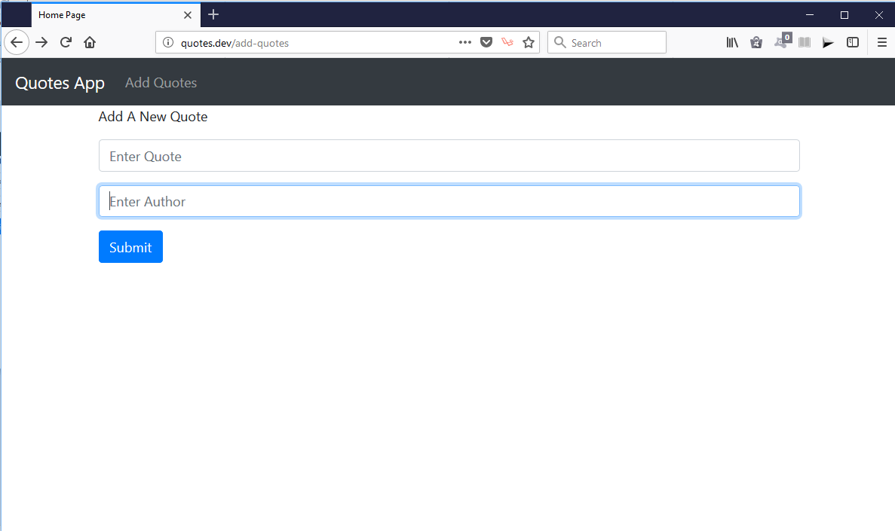
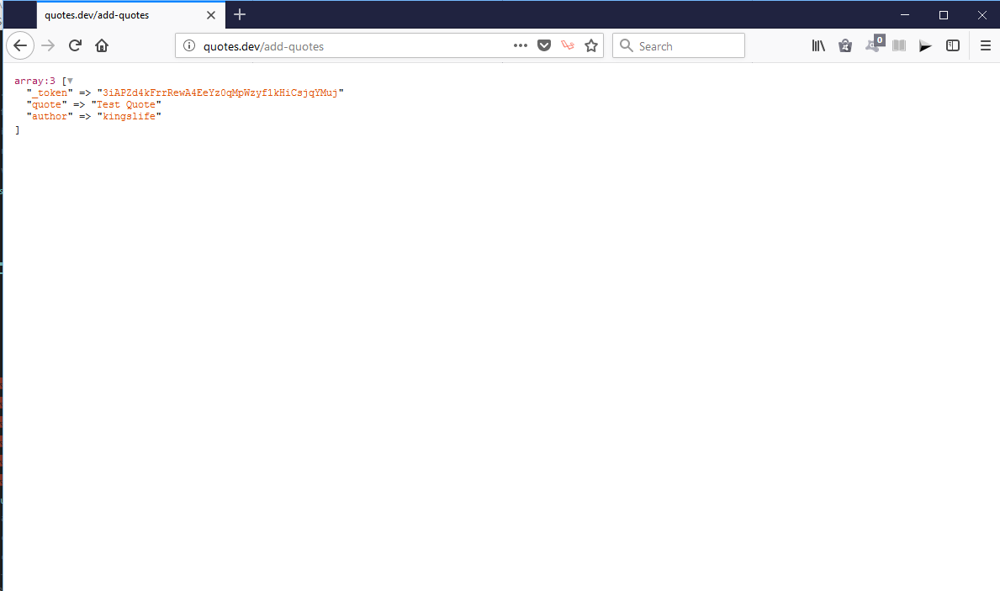
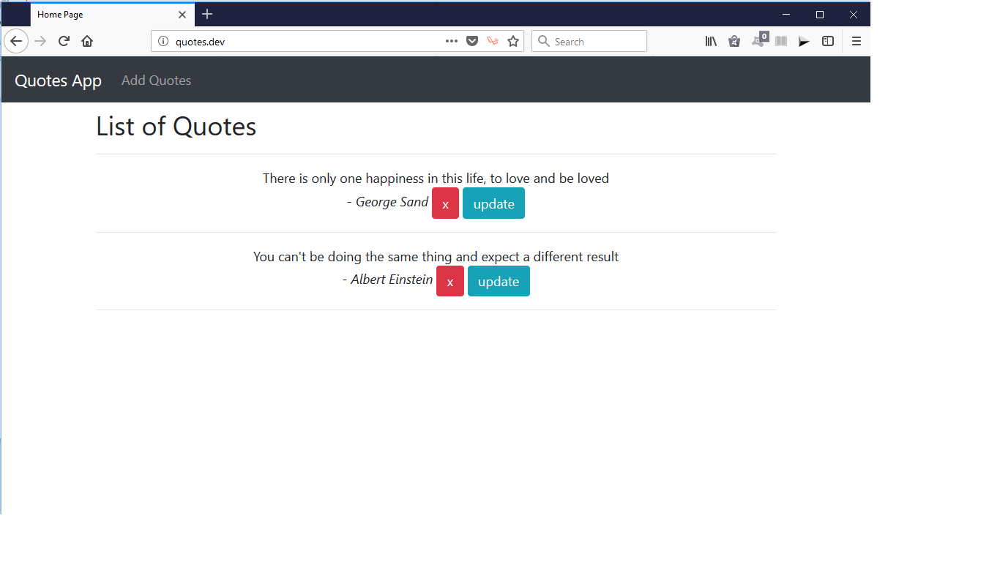

Controllers
Remember we had already worked with controllers when we created one for our pages.
We'll create another for our Quotes. This controller will be responsible for managing(creating, reading, updating and deleting) quotes from the database. Run the command below in the terminal
This creates a quotes controller. Note the naming convention. Another part of the command is the -r flag. This command creates a RESTful controller with functions for managing the data.
QuotesController.php
Create Quotes
Create a add-quotes.blade.php file in the resources/views directory and add the following contents. This will contain a form for adding quotes
add-quotes.blade.php
Notice that we have included a csrf() function. This is required in laravel for any post request.
Add the route to return the view.
web.php file.
Modify the create method of QuotesController.php to return the view.
Now if we head of the browser and enter quotes.dev/add-quotes, we should see the view.
When we submit the form, we'll make a post request to /add-quotes route.
Add the route to the web.php file.
What we can do first is to die dump the request so that we can see what values are returned when the user submits the form. Modify the store method of the QuotesController
Let us test it. Head over to the browser and enter quotes.dev/add-quotes. You should see the add quotes page below

Fill the form and submit. You should the request dumped to the page. We have successfully send the values to the store method

Saving Data
Now that we have passed the values to the controller. Saving it to our database is a piece of cake. We'll use Eloquent.
What is Eloquent? Eloquent provides a simple way to use ActiveRecord pattern when working with databases. By using this technique, we can wrap our database into objects. We may use Eloquent ORM to create, edit, manipulate, deletes our quotes without writing a single line of SQL!
To save a record, we create an instance of the Quote class, set the attributes to the values gotten from the request. Modify the store method in the QuotesController.php
Also add to the import below just above the class declaration
That's all we need to save the record. NO need for crazy SQL! Fill the form submit. Head over to your database in phpMyAdmin and select the quotes table. You should see your data there.
Reading Data
To read the data. We simply return our view with the data from the database.
Let us modify the web.php slightly so that we can use the QuotesController to return the welcome view.
Modify the route
Change to
Head over to the QuotesController.php and modify the index method.
We use Quote::all() to return all the quotes from the database. Next we return the welcome view passing the quotes to it. We need to modify our welcome view to see the quotes.
welcome.blade.php
We use blade to loop round the values passed to the view. The double curly braces is used to output the values. The quote and author are values we defined in the database.
Save and reload the welcome page. You should see the list of quotes.

Updating Data
Updating is similiar to creating data. So, create the view update.blade.php and add the content below.
To see this page, modify the update button in the welcome.blade.php to hit that route.
Notice that the id of the quote is passed to the route. This will enable us to update the quote with the id. Add route to web.php
web.php
To return the view with the selected quote. Modify the edit method of the QuotesController.php
Save and reload page. Click update. That should take you to the update view with the form inputs populated with the selected quote. After making changes, what next? We have to update out database.
In the update.blade.php, modify the action attribute of the form to point to an update route using a post request.
update.blade.php
Define the route in the web.php
web.php
Notice that we are making a post request to the update method of the controller passing the id of the route we want to update.
NB: The first route is now named home. We can access this route using the name.
Modify the update method in QuotesController.php to save the changes
Deleting Data
The final part of the CRUD puzzle is to delete the data from the database.
Set up the route for the delete button.
welcome.blade.php
Add the delete route web.php
Notice that we are making a call to the destroy method. Modify the method in the QuotesController file.
QuotesController.php
Save and reload view. You should be able to delete any quote. Before we finish up this project, let us make it more user friendly by flashing a message to the user when an action is completed.